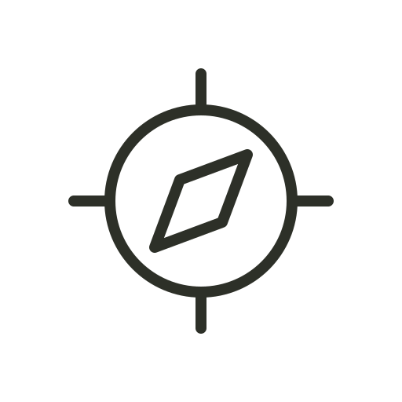icon-compassicons · 512×512 · alphaПиктограмма факта или события; не подменяет реальное GPS-событие
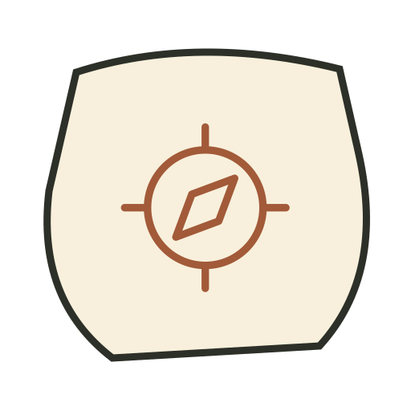sticker-compassstickers · 512×512 · alphaНаклейка на бумажный слой; один главный знак на кадр
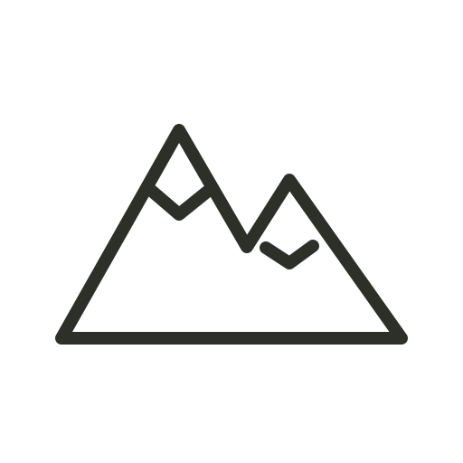icon-mountainicons · 512×512 · alphaПиктограмма факта или события; не подменяет реальное GPS-событие
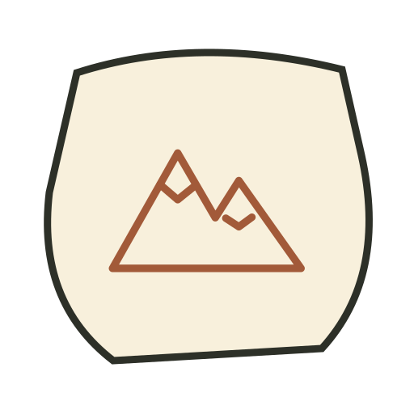sticker-mountainstickers · 512×512 · alphaНаклейка на бумажный слой; один главный знак на кадр
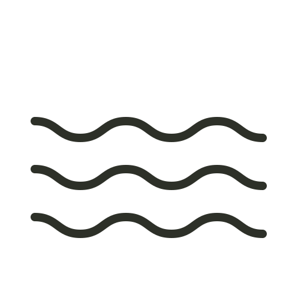icon-lakeicons · 512×512 · alphaПиктограмма факта или события; не подменяет реальное GPS-событие
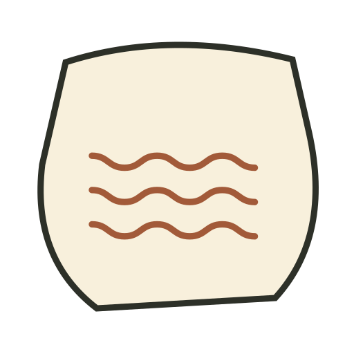sticker-lakestickers · 512×512 · alphaНаклейка на бумажный слой; один главный знак на кадр
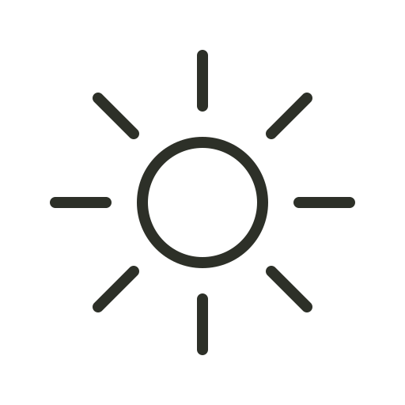icon-sunicons · 512×512 · alphaПиктограмма факта или события; не подменяет реальное GPS-событие
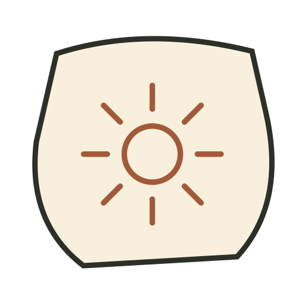sticker-sunstickers · 512×512 · alphaНаклейка на бумажный слой; один главный знак на кадр
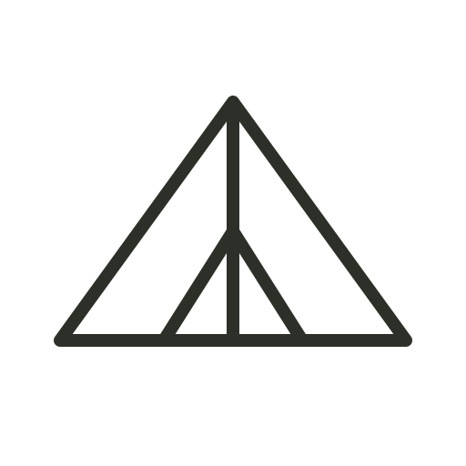icon-tenticons · 512×512 · alphaПиктограмма факта или события; не подменяет реальное GPS-событие
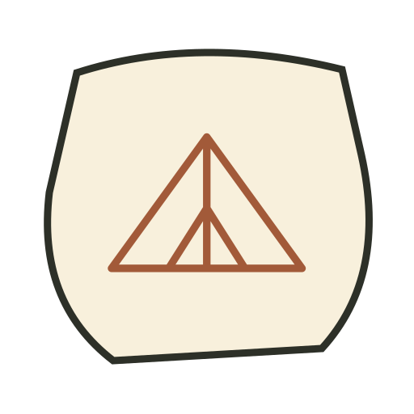sticker-tentstickers · 512×512 · alphaНаклейка на бумажный слой; один главный знак на кадр
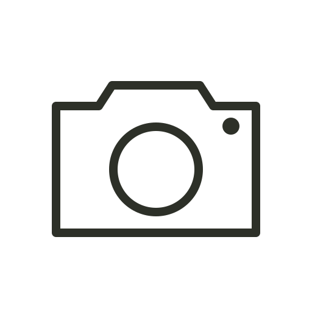icon-cameraicons · 512×512 · alphaПиктограмма факта или события; не подменяет реальное GPS-событие
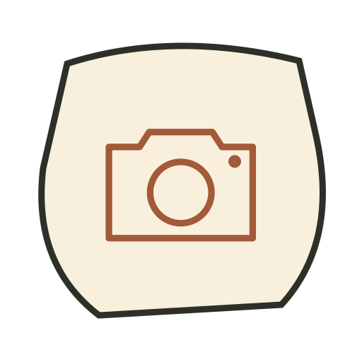sticker-camerastickers · 512×512 · alphaНаклейка на бумажный слой; один главный знак на кадр
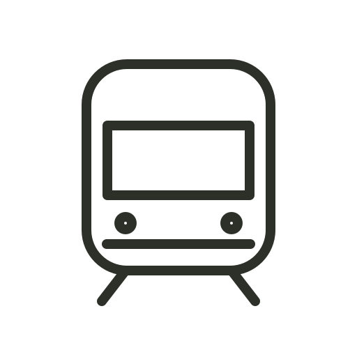icon-trainicons · 512×512 · alphaПиктограмма факта или события; не подменяет реальное GPS-событие
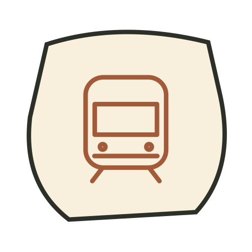sticker-trainstickers · 512×512 · alphaНаклейка на бумажный слой; один главный знак на кадр
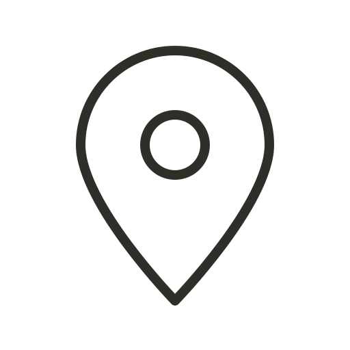icon-pinicons · 512×512 · alphaПиктограмма факта или события; не подменяет реальное GPS-событие
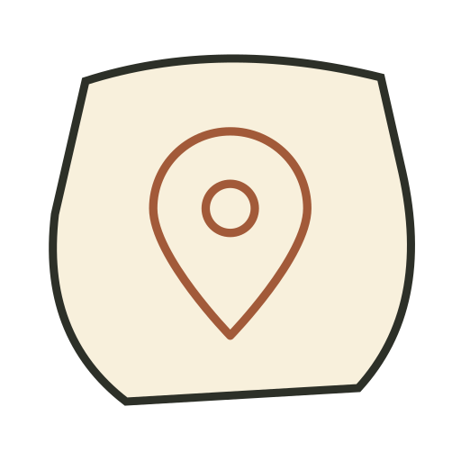sticker-pinstickers · 512×512 · alphaНаклейка на бумажный слой; один главный знак на кадр
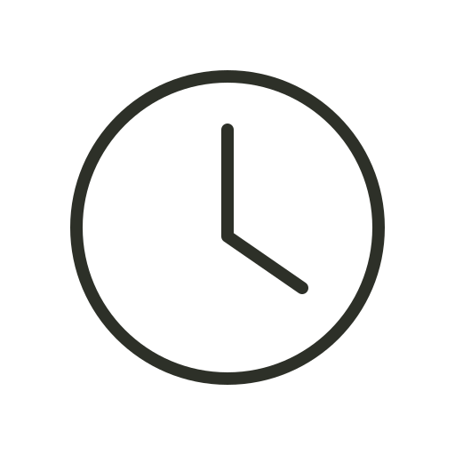icon-clockicons · 512×512 · alphaПиктограмма факта или события; не подменяет реальное GPS-событие
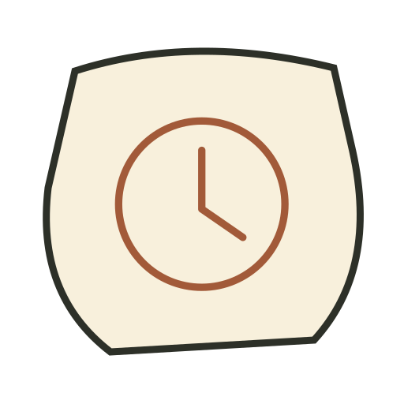sticker-clockstickers · 512×512 · alphaНаклейка на бумажный слой; один главный знак на кадр
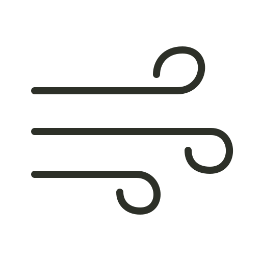icon-windicons · 512×512 · alphaПиктограмма факта или события; не подменяет реальное GPS-событие
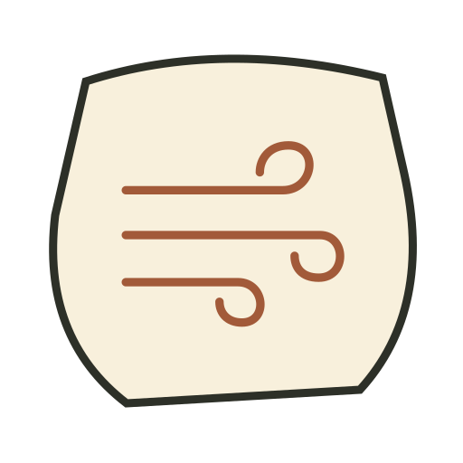sticker-windstickers · 512×512 · alphaНаклейка на бумажный слой; один главный знак на кадр
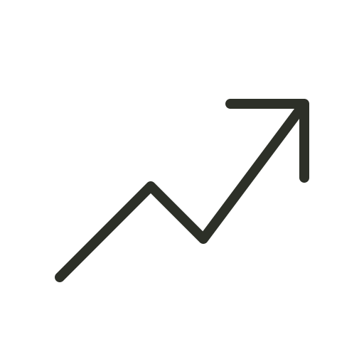icon-ascenticons · 512×512 · alphaПиктограмма факта или события; не подменяет реальное GPS-событие
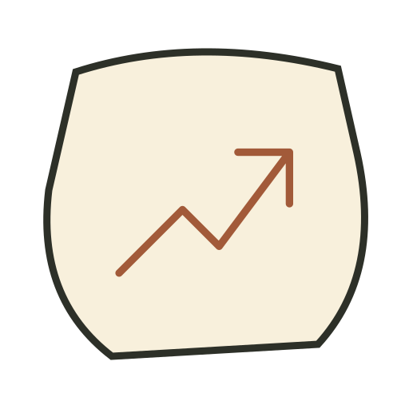sticker-ascentstickers · 512×512 · alphaНаклейка на бумажный слой; один главный знак на кадр
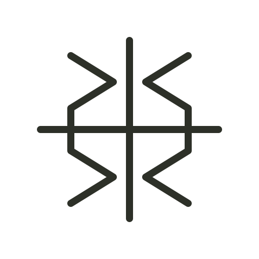icon-bordericons · 512×512 · alphaПиктограмма факта или события; не подменяет реальное GPS-событие
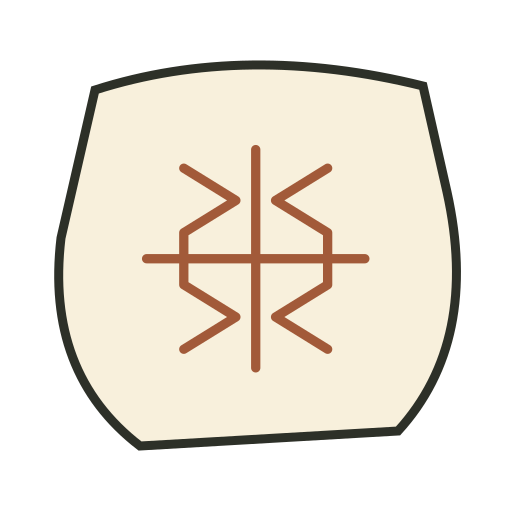sticker-borderstickers · 512×512 · alphaНаклейка на бумажный слой; один главный знак на кадр
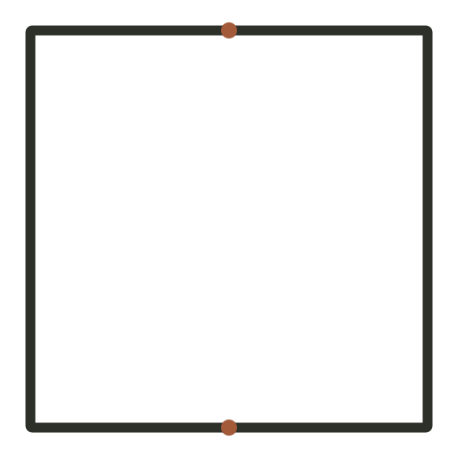frame-archivalframes · 512×512 · alphaРамка поверх фото; выравнивать фото по внутреннему окну
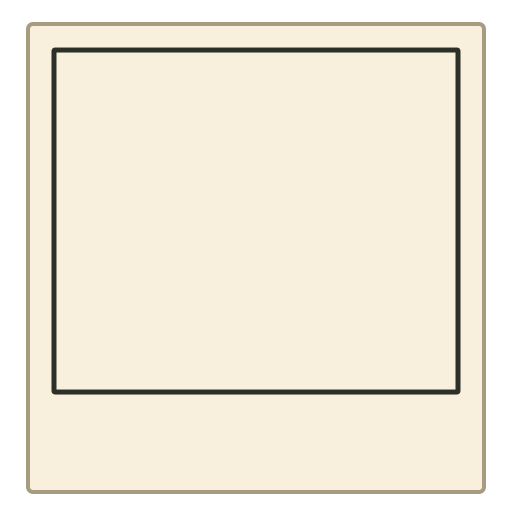frame-polaroidframes · 512×512 · alphaРамка поверх фото; выравнивать фото по внутреннему окну
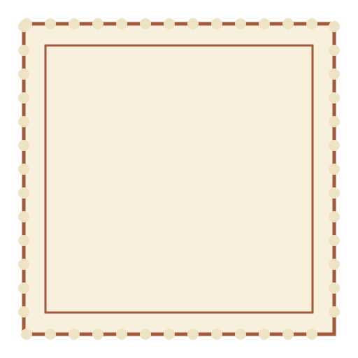frame-postageframes · 512×512 · alphaРамка поверх фото; выравнивать фото по внутреннему окну
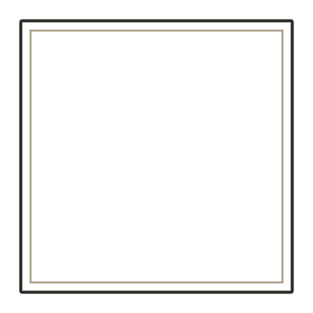frame-double-ruleframes · 512×512 · alphaРамка поверх фото; выравнивать фото по внутреннему окну
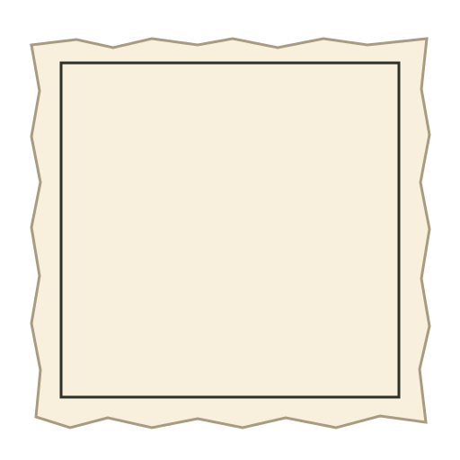frame-tornframes · 512×512 · alphaРамка поверх фото; выравнивать фото по внутреннему окну
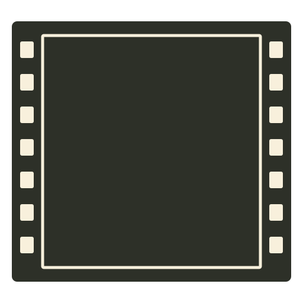frame-filmframes · 512×512 · alphaРамка поверх фото; выравнивать фото по внутреннему окну
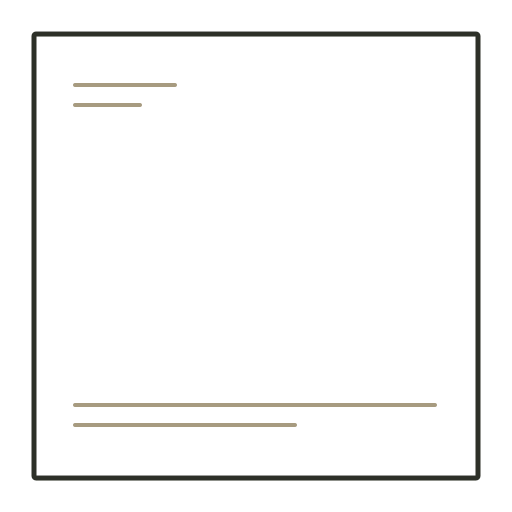frame-fieldnoteframes · 512×512 · alphaРамка поверх фото; выравнивать фото по внутреннему окну
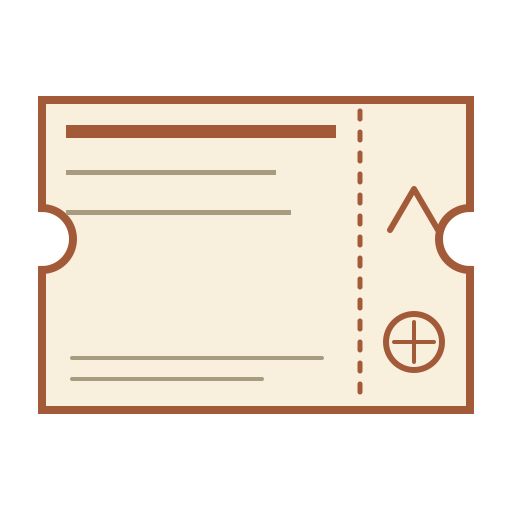ticket-summittickets · 512×512 · alphaПустой билетный модуль; текст маршрута кладётся отдельным слоем
ticket-arrivaltickets · 512×512 · alphaПустой билетный модуль; текст маршрута кладётся отдельным слоем
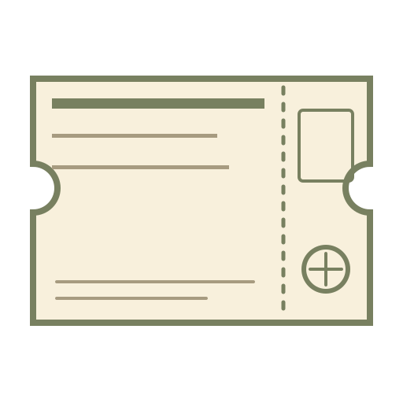ticket-passporttickets · 512×512 · alphaПустой билетный модуль; текст маршрута кладётся отдельным слоем
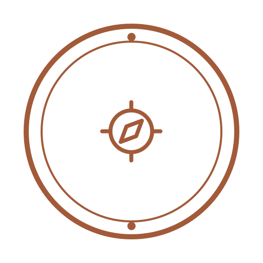stamp-compassstamps · 512×512 · alphaШтамп события; использовать только когда событие есть в данных
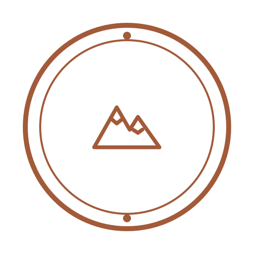stamp-mountainstamps · 512×512 · alphaШтамп события; использовать только когда событие есть в данных
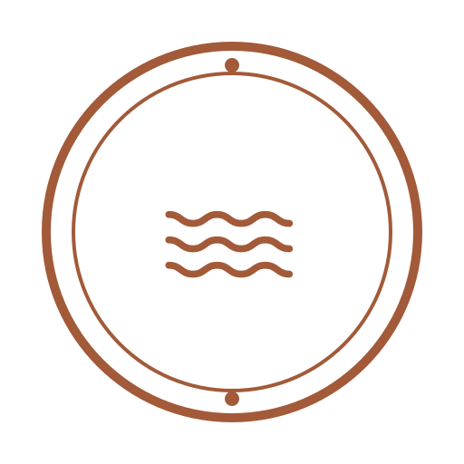stamp-lakestamps · 512×512 · alphaШтамп события; использовать только когда событие есть в данных
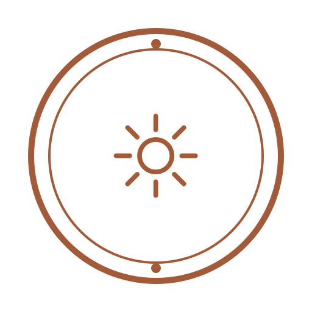stamp-sunstamps · 512×512 · alphaШтамп события; использовать только когда событие есть в данных
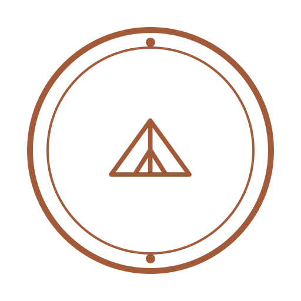stamp-tentstamps · 512×512 · alphaШтамп события; использовать только когда событие есть в данных
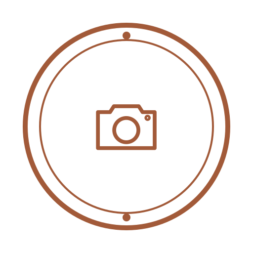stamp-camerastamps · 512×512 · alphaШтамп события; использовать только когда событие есть в данных
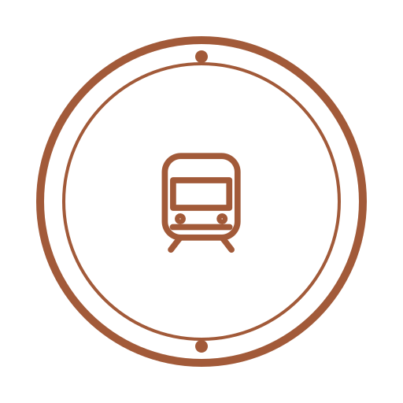stamp-trainstamps · 512×512 · alphaШтамп события; использовать только когда событие есть в данных
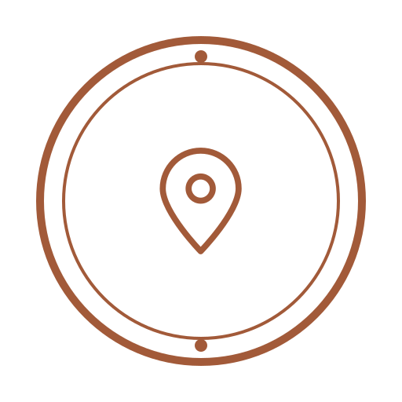stamp-pinstamps · 512×512 · alphaШтамп события; использовать только когда событие есть в данных
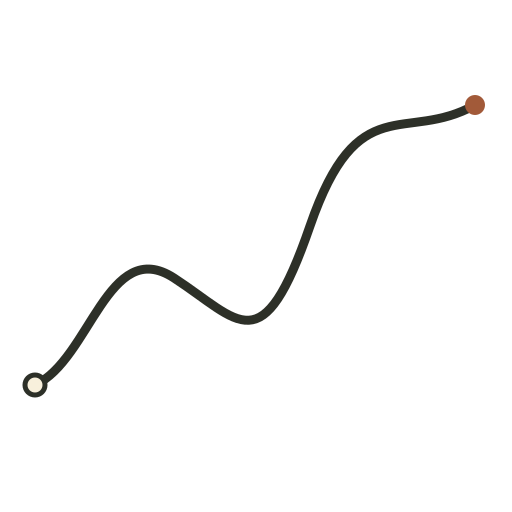route-inkroutes · 512×512 · alphaСистемный образец штриха; в сцене его геометрия заменяется реальным треком
route-pencilroutes · 512×512 · alphaСистемный образец штриха; в сцене его геометрия заменяется реальным треком
route-stitchedroutes · 512×512 · alphaСистемный образец штриха; в сцене его геометрия заменяется реальным треком
route-doubleroutes · 512×512 · alphaСистемный образец штриха; в сцене его геометрия заменяется реальным треком
route-dottedroutes · 512×512 · alphaСистемный образец штриха; в сцене его геометрия заменяется реальным треком
route-washroutes · 512×512 · alphaСистемный образец штриха; в сцене его геометрия заменяется реальным треком
route-surveyroutes · 512×512 · alphaСистемный образец штриха; в сцене его геометрия заменяется реальным треком
route-fieldroutes · 512×512 · alphaСистемный образец штриха; в сцене его геометрия заменяется реальным треком